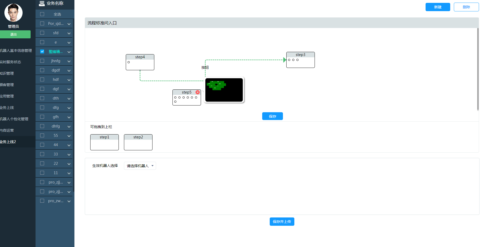
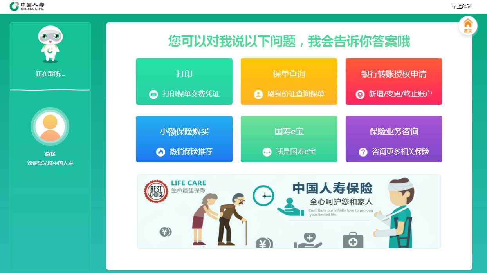
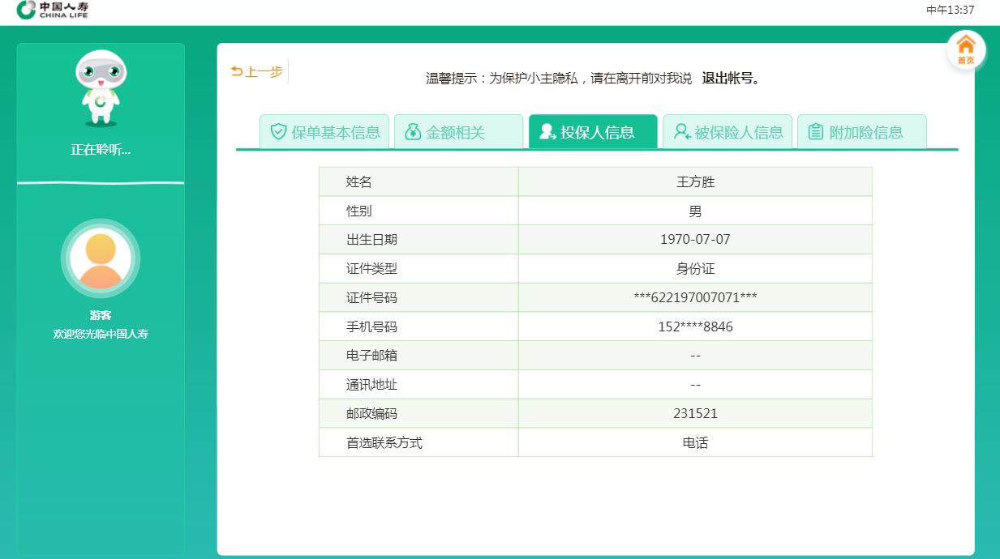
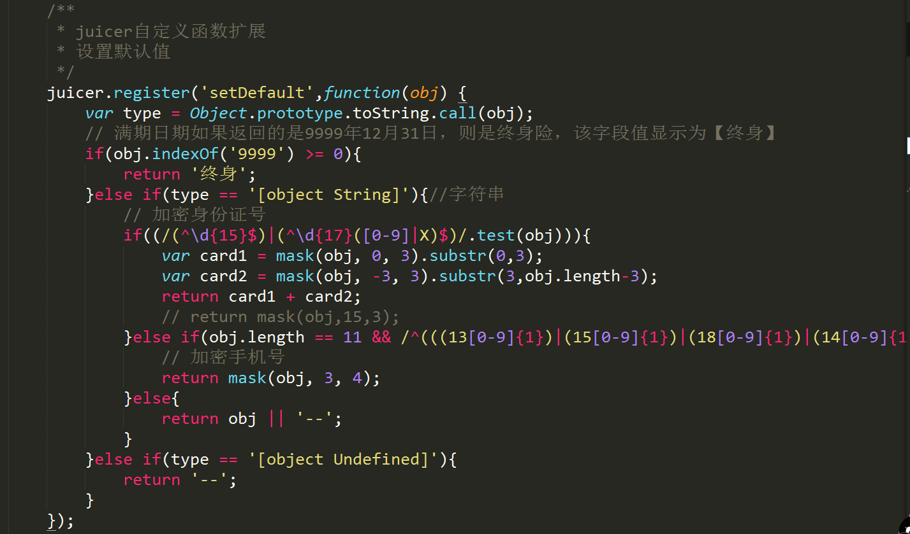
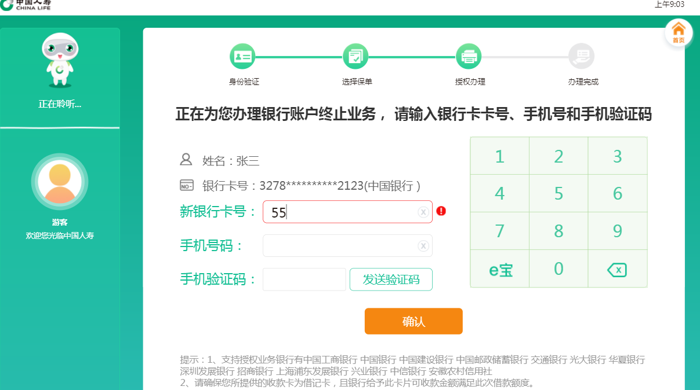
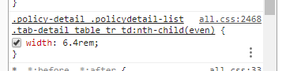

工作分享
杨颖
2017.02.13-2017.10.13
目录
一、业务组工作内容
二、永不止尽的挖坑，填坑
三、前端职能组的学习与收获
四、学校到职场的角色转换
五、交流环节
一、业务组工作内容
一. 参与项目
产品基线1.0（产品可视化版本）
中国人寿
 
二. 所用技术介绍
1. SPA单页面应用
2. require+director框架
3. juicer模板引擎
4. less预处理语言
二. 永无止境的挖坑与填坑。。。
1. 基线版本中流程拖拽功能和拖放冲突；浏览器截图生成的图片背景色是黑色
2. juicer渲染的数据需要处理
 3. swiper插件（两个页面滑动过程中会卡住）

4. 自定义数字键跟系统自带键盘出现冲突
5. SVN日志不写或者描写不详细
6. less层级太多
7. 事情代理机制使用过多
解决方法：就近委托；不冒泡的事件不用事件委托
三、前端职能组的学习与收获
收获之旅
四、初入职场的感悟
学生到员工的角色转换
1. 心态关
2. 人际关系关
3. 理想关
4. 业务关
5. 意识关
6. 生活关
7. 作风关
8. 行为规范关
贪---->贫
在学校的技术学习多且不精
学习目标经常更换
工作场景和自学场景关注点不同